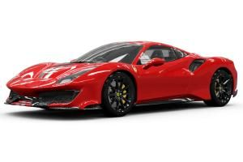
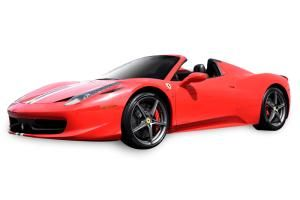
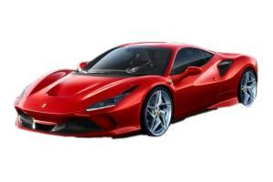

|  |
Ferrari 488 Pista Ferrari 488 Pista được trang bị động cơ V8 mạnh mẽ nhất trong lịch sử thương hiệu Maranello và là dòng xe thể thao đặc biệt của công ty với mức độ chuyển giao công nghệ cao nhất từ trước đến nay từ xe đua. Trên thực tế, cái tên này, có nghĩa là 'đường đua' trong tiếng Ý, được chọn cụ thể để chứng minh cho di sản vô song của Ferrari trong thể thao ô tô. Về mặt kỹ thuật, Ferrari 488 Pista bao gồm tất cả kinh nghiệm tích lũy được trên các đường đua thế giới của 488 Challenge và 488 GTE. |
|  |
Ferrari F8 Tribotu Siêu xe siêu xịn vip pro. |
|  |
Ferrari 458 Siêu xe siêu xịn vip pro. |